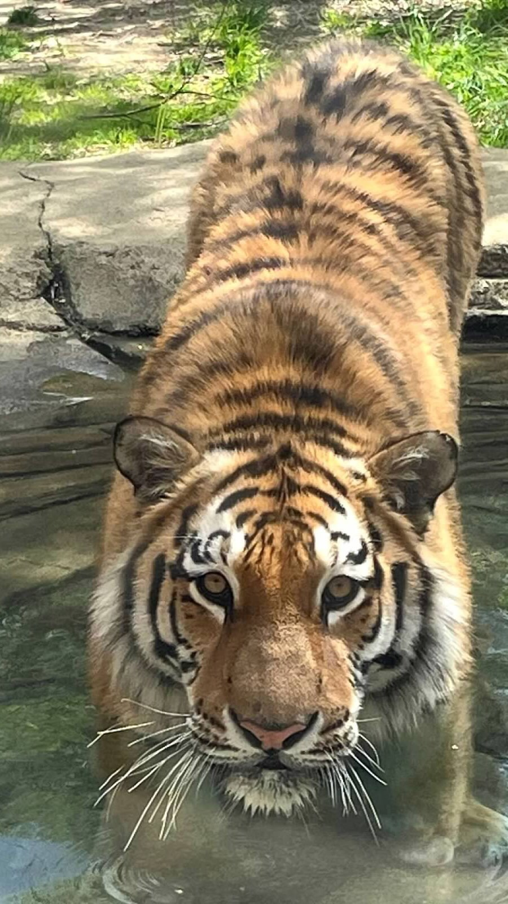

Earth Day with Lewis the Tiger
Cincinnati Zoo & Botanical Garden · Earth Day reel

For this Earth Day feature: Lewis, the Amur tiger. Lewis and his brother Clark are just one of over 850 species of animals I've photographed so far — mammals, birds, reptiles and amphibians — since creating the page in 2020.
My passion is telling people what is happening to endangered animals in the wild, and hopefully one day making my own book of all the species I've seen and photographed — basically like Pokémon, but with real animals. I still support conservation programs for endangered species like the Amur tigers, and I hope to inspire the next generation of wildlife explorers and photographers, starting in their own backyards, Metroparks, campgrounds and local zoos.
We are all connected in the great circle of life!
Louie posted this reel on Facebook — watch it there → · same tour on Instagram